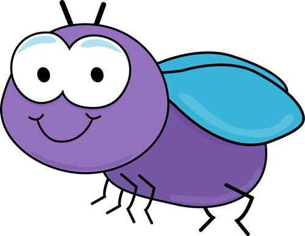
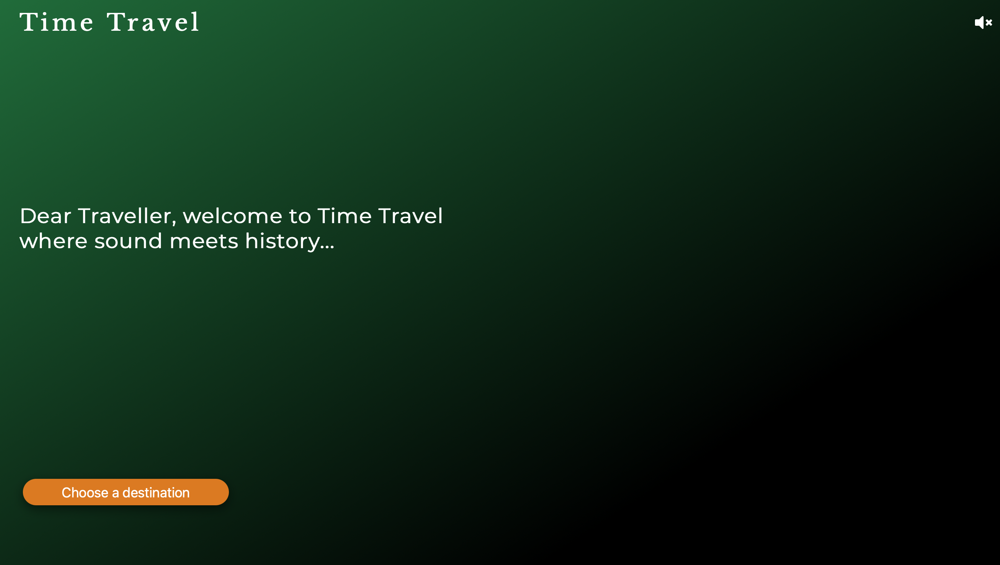
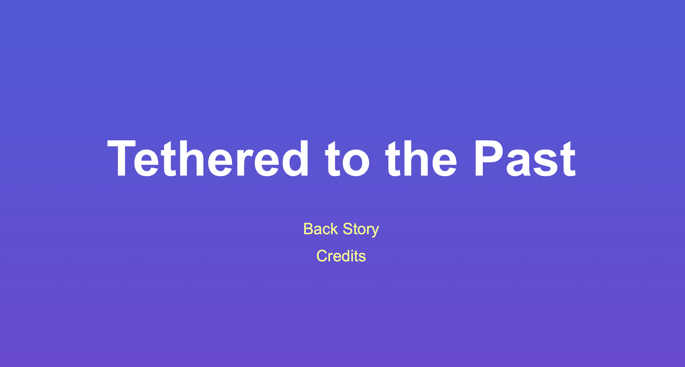
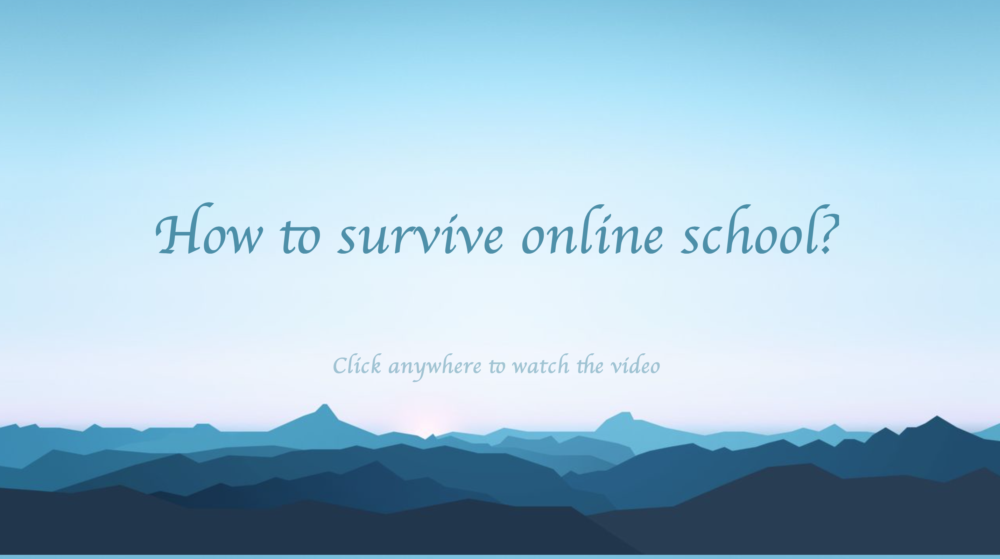

30 Minute Movie Festival
"The thirty minute movie festival was my very first project. In our groups of three, were tasked with filming, editing and producing a short film within the limited time frame fo thirty minutes. We created a short film about flies. The overall story was about what a fly does in a day. The movie was filmed from the point of view of a fly, and it was very interesting to animate the film to make it seem as though the viewer was the fly. The task seemed rather daunting at the start, and I could not fathom how a short film could be produced in such a short amount of time. However once we figured out what the film would be about, the project was ultimately very fun, and I thoroughly enjoyed the process, Click on the image to view the project."
Sound Project
The sound project required us to record original sounds and create a story of some sorts, and compile our work into a website. We chose the theme of time travel, and each member of our group chose their home country to record a segment about, as well as compile pictures of the sites of attraction. This project was very interesting to create and brought back memories of my home country. However as none of us were in our countries during the process of the project, we were limited in terms of filming original content, and recording original sounds in each country, and therefore the experience of time travel was not as authentic as we had hoped. Given the ability to be in Jordan, I would have filmed a video of said sites as I spoke about them, as well as included the background sounds of each place, Click on image to view the project.
Comix Strip
The comix strip project required us to tell a story in a creative way on an interactive webpage. I find storytelling very enjoyable, so I especially enjoyed this project. We chose to tell this story though social media posts, which made it slightly challenging as not many people share personal thoughts and day to day struggles on social media. In hindsight, a different method of storytelling might have proved to work better. Nonetheless, editing the appearance of our characters, writing up the captions and choosing the photos was a very fun process, Click on the image to view the project.
Movie Project
he movie project was definitely one of my favorite projects. We chose the theme of online school, specifically how to survive it. I believe that the video will speak for itself, but filming it and producing It was entertaining as well as challenging. With my character being the one that was slacking off with online school, I drew inspiration from some of my very first online classes, where I struggled to adapt to this new method of learning. I believe that when a personal touch is added to any work, it instantly becomes more special, don't forget to click the image to view the project (:.
